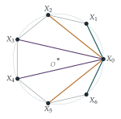

STEP III 2016, 문제 7
계속 읽기 전에 문제를 먼저 읽어 보자. 문제는 STEP Support Programme의 문제 데이터베이스에 있다: step.maths.org/questions/16-s3-q7
도입
반지름이 \(1\)인 원에 정칠각형(regular heptagon)을 그린다. 한 꼭짓점에서 나머지 꼭짓점으로 여섯 개의 현(chord)을 긋고 그 길이를 잰다. 여섯 길이를 모두 곱한다. 답은 정확히 \(7\)이다. 정\(100\)각형에서 한 꼭짓점에서 그은 \(99\)개의 현의 길이를 모두 곱하면 정확히 \(100\)이다.
이렇게 깔끔한 결과가 왜 성립할까? 현의 길이 자체는 지저분하다(\(2\sin\frac{\pi}{7}\), \(2\sin\frac{2\pi}{7}\) 등). 이 문제는 이 결과가 간단한 대수적 항등식, 즉 단위근(roots of unity)을 이용한 \(z^n - 1\)의 인수분해(factorisation)의 기하학적 그림자라는 것, 그리고 평면 위의 거리가 복소수의 절댓값(modulus)이라는 것을 보여 준다.
시작하기 전에
다각형의 꼭짓점을 1의 \(n\)제곱근 \(X_k = \omega^k\)에 놓자. \(P\)가 점 \(z\)일 때 \(|PX_k|\)를 \(z\)로 나타내면 무엇인가? 그렇다면 모든 거리의 곱은 무엇인가?
\(|PX_k| = |z - \omega^k|\)이고, 이들을 모두 곱하면 \(|(z - 1)(z - \omega)\cdots(z - \omega^{n-1})|\)인데, 문제의 첫 부분에 따르면 이는 \(|z^n - 1|\)이다. \(n\)개의 거리의 곱이 하나의 절댓값이 되었다. 나머지는 모두 \(z\)를 영리하게 고르는 일이다.
차근차근 풀기
단계 1 인수분해
각 \(\omega^k\)는 \((\omega^k)^n = (\omega^n)^k = 1\)을 만족하므로 \(1, \omega, \ldots, \omega^{n-1}\)은 \(z^n - 1\)의 근이다. 이들은 서로 다르다(편각 \(\frac{2\pi k}{n}\)이 \(0\)과 \(2\pi\) 사이에서 모두 다르다). 따라서 이들은 이 \(n\)차 다항식의 근 \(n\)개 전부이고, 최고차항의 계수가 \(1\)이므로 \(z^n - 1 = \prod_{k=0}^{n-1}(z - \omega^k)\)이다.■
단계 2 수직이등분선 위의 점
그림을 회전하여 \(X_k = \omega^k\)가 되게 하자. \(X_0 = 1\)과 \(X_1 = \omega\)에서 같은 거리에 있는 점들은 \(X_0X_1\)의 수직이등분선(perpendicular bisector)을 이루며, 이는 \(O\)를 지나고 각이 \(\frac\pi n\)인 직선이다.
따라서 \(P\)는 어떤 실수 \(t\)(양수 또는 음수)에 대해 \(z = te^{\mathrm{i}\pi/n}\)이고, \(|OP| = |t|\)이다. \(z^n\)은 무엇인가?
\(z^n = t^ne^{\mathrm{i}\pi} = -t^n\)이다. 따라서 \[|PX_0| \times \cdots \times |PX_{n-1}| = |z^n - 1| = |{-t^n} - 1| = |t^n + 1|.\] \(n\)이 짝수이면 \(t^n = |t|^n \geq 0\)이므로 이 값은 \(|OP|^n + 1\)이다.■
\(n\)이 홀수이면 어떻게 될까? \(t > 0\)인 경우와 \(t < 0\)인 경우를 따로 생각하고, 각 경우가 기하학적으로 무엇을 뜻하는지 말해 보아라.
\(n\)이 홀수이면 \(t^n\)은 \(t\)와 부호가 같다.
\(t \geq 0\)이면, 즉 \(P\)가 \(O\)를 기준으로 \(X_0X_1\)의 중점과 같은 쪽에 있으면, 곱은 \(|OP|^n + 1\)이다.
\(t < 0\)이면, 즉 \(P\)가 \(O\)를 기준으로 반대쪽(변 \(X_0X_1\)의 맞은편 꼭짓점 쪽)에 있으면, \(t^n = -|OP|^n\)이고 곱은 \(\bigl|1 - |OP|^n\bigr|\)이다.
\(n\)이 홀수일 때, \(O\)를 지나고 \(X_0X_1\)에 수직인 직선은 반대편의 한 꼭짓점을 지난다. 두 번째 경우에서 \(P\)가 그 꼭짓점일 때(\(|OP| = 1\)) 곱은 0이 되는데, 이때 거리 중 하나가 0이므로 당연한 결과이다.
단계 3 꼭짓점에서 그은 현
이제 \(P = X_0\)이고 거리 중 하나인 \(|X_0X_0|\)가 0이므로 \(|z^n - 1| = 0\)은 쓸모가 없다. \(\omega, \omega^2, \ldots, \omega^{n-1}\)을 근으로 갖지만 \(1\)은 근으로 갖지 않는 다항식은 무엇인가?
\(z^n - 1\)을 \(z - 1\)로 나누면 \[(z - \omega)(z - \omega^2)\cdots(z - \omega^{n-1}) = \frac{z^n - 1}{z - 1} = 1 + z + z^2 + \cdots + z^{n-1}.\] 우변은 다항식이므로 이 식은 모든 \(z\)에 대해 성립하며, \(z = 1\)에서도 성립하고 이때 값은 \(n\)이다. \(z = 1\)에서 절댓값을 취하면 \[|X_0X_1| \times |X_0X_2| \times \cdots \times |X_0X_{n-1}| = |1 - \omega|\,|1 - \omega^2|\cdots|1 - \omega^{n-1}| = n. \qed\]

돌아보기
거리는 절댓값이다. \(|PX_k| = |z - \omega^k|\)이므로 거리의 곱은 곱의 절댓값이고, 그 곱은 닫힌 꼴(closed form)로 나타낼 수 있었다.
대칭을 이용해 좌표를 정한다. 꼭짓점이 단위근이 되도록 회전하고 \(O\)를 지나는 대칭축을 이용하자 \(z^n\)을 쉽게 계산할 수 있었다.
대입하기 전에 0이 되는 인수를 소거한다. 5.3 절에서처럼, 관심 있는 점에서 0이 되는 인수를 나누어 없애자 대입이 가능해졌다.
숨은 수학
소문항 (i)은 로저 코츠의 정리이다. 코츠는 뉴턴(Newton)의 Principia(프린키피아) 제2판을 편집한 케임브리지의 뛰어난 젊은 수학자로, 1716년 서른세 살의 나이로 세상을 떠났다(뉴턴은 “그가 살았더라면 우리는 무언가를 알게 되었을 것이다”라고 말했다). 코츠는 \(P\)가 \(O\)에서 정\(n\)각형의 한 꼭짓점을 지나는 반직선 위에 있으면 \(P\)에서 꼭짓점들까지의 거리의 곱이 \(\bigl||OP|^n - 1\bigr|\)이고, \(P\)가 한 변의 중점을 지나는 반직선 위에 있으면 그 곱이 \(|OP|^n + 1\)임을 발견했다. 그는 복소수를 쓰지 않고 이 결과를 이용해 \(x^n \pm 1\)을 실수 계수 이차식들로 인수분해했는데, 이는 유리함수(rational function)를 적분하는 데 필요했다. 이 정리는 그가 죽은 뒤인 1722년에 출판되었다.
사인의 곱
\(|1 - \omega^k| = |e^{-\mathrm{i}\pi k/n} - e^{\mathrm{i}\pi k/n}| = 2\sin\frac{k\pi}{n}\)이므로 소문항 (ii)는 다음을 말한다. \[\prod_{k=1}^{n-1}\sin\frac{k\pi}{n} = \frac{n}{2^{n-1}}.\] 이것은 5.3 절의 코사인 곱과 짝을 이룬다. 이와 관련된 곱은 \(z^n - 1\)의 판별식(discriminant)을 준다. 서로 다른 1의 \(n\)제곱근의 모든 쌍 사이 거리의 제곱을 곱하면 \(n^n\)이다. 판별식은 다항식의 근들이 서로 얼마나 떨어져 있는지를 재며, 다항식의 대수학과 수체(number field)의 대수학에서 핵심적인 역할을 한다. 이 내용은 6장에서 다룬다.
정전기학과 균등한 간격
물리적으로 해석할 수도 있다. 원 위에 크기가 같은 전하 \(n\)개를 놓자. (2차원 정전기학의 로그 퍼텐셜을 쓸 때) 퍼텐셜 에너지를 최소화하는 배치는 정다각형이며, 그 에너지에는 정확히 \(\sum\ln|X_jX_k|\), 즉 거리의 곱의 로그가 들어 있다. “가능한 한 넓게 퍼진” 점들은 수치해석(3.6 절에서 최적의 보간점은 \(x = \cos\theta\)를 통해 정다각형에서 나온다)과 무작위 행렬(random matrices) 이론에서 중요하다.
사고 기술
평면 위의 점은 복소수이고, 거리는 절댓값이며, 정다각형은 단위근이다. 거리의 곱은 다항식의 절댓값이 된다.
이렇게 옮기면 \(z^n - 1\)의 인수분해 같은 대수적 항등식으로, 직접 보기는 매우 어려운 기하학적 사실을 증명할 수 있다.
더 도전하기
작은 경우 확인하기. 정사각형(\(n = 4\))과 정삼각형(\(n = 3\))에 대해 소문항 (ii)를 직접 확인하여라.
꼭짓점을 지나는 경우. \(P\)가 \(O\)에서 \(X_0\)을 지나는 반직선 위에 있으면 \(|PX_0| \times \cdots \times |PX_{n-1}| = \bigl||OP|^n - 1\bigr|\)임을 보여라.
평균 거리. 소문항 (ii)와 3.2 절의 산술-기하 평균 부등식(AM–GM inequality)을 이용하여 \(X_0\)에서 그은 \(n - 1\)개의 현의 평균 길이가 \(n^{1/(n-1)}\) 이상임을 보여라. 실제 평균 \(\frac{1}{n-1}\sum_k 2\sin\frac{k\pi}{n}\)을 \(n = 6\)일 때 구하고 비교하여라.
모든 현. 심화 단위원에 내접하는 정\(n\)각형의 \(\binom n2\)개 현의 길이를 모두 곱하면 \(n^{n/2}\)임을 보여라.
더 읽을거리
Tristan Needham, Visual Complex Analysis (Oxford University Press). 복소수를 이용한 기하학을 아름다운 그림과 함께 다룬다.
Ross Honsberger, Mathematical Gems (Mathematical Association of America). 정다각형에 관한 우아한 문제 여러 개가 실려 있다.
Ronald Gowing, Roger Cotes: Natural Philosopher (Cambridge University Press). 코츠의 생애와 그의 수학을 다룬 전기이다.